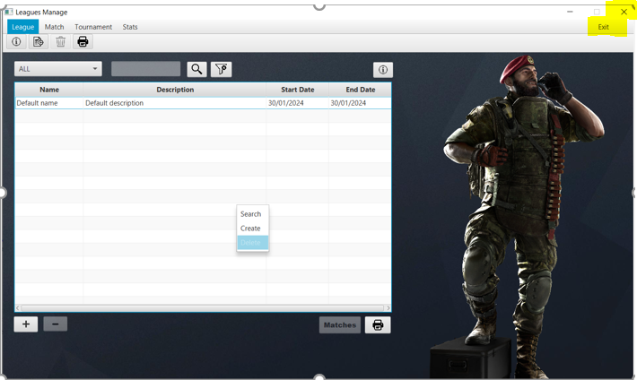

En esta ventana maneja todos las operaciones correspondientes a las Leagues de la aplicacion. Esta te permite crear, modificar, buscar y borrar Leagues, ademas de imprimir los datos de la tabla y moverte a la ventana de matches
Para crear una league, puedes tanto clickar el boton derecho y pulsar en create, puedes clicar en el boton +, o puedes pulsar en el boton de la barra superior para añadir documento. Se creara una league con valores por defecto. No se puede crear 2 Leagues con el mismo nombre
Para la modificacion de Leagues, se debe clickar en la celda que se desea modificar una vez modificado, se presiona enter para confirmar el cambio, o ESC para cancelar la modificacion. No se pueden dejar los campos vacios, y cada uno de los campos tiene un formato a seguir
Para las busquedas de leagues, debes seleccionar en la combo el tipo de busqueda que deseas. Una vez seleccionado, puede ser requerido que rellenes el campo de texto con un nombre o un numero de match que quieras buscar. Una vez hecho eso, pulsar en el boton de busqueda o clickar en el boton derecho y pulsar search para que busque y te muestre los datos en la tabla. Tambien tienes el boton de limpiar para que la tabla y muestra todas las Leagues que existen
Para borrar una league, primero debes seleccionar en la tabla la league que quieres borrar. Una vez hecho, puedes tanto clickar el boton derecho y pulsar en delete, puedes clicar en el boton -, o puedes pulsar en el boton de papelera de la barra superior. Te pedira confirmacion para borrar la league.
Para imprimir todos los datos de la tabla, debes de clickar en el boton de impresion de la parte inferior de la ventana o de la barra superior. Una vez hecho, te mostrara una ventana con los datos de la tabla que tenga en ese momento.
Primero debes tener una league seleccionada para poder pulsar el boton. Una vez seleccionada al pulsarlo se le mandara a la ventana de Matches mostrando los pertenecientes a la League seleccionada. Te pedira confirmacion para salir de la ventana
Puedes pulsar el boton X en la parte superior o escape para salir de la aplicacion. En caso de que quieras salir, te pedira confirmacion. En caso de que pulses en el exit y en log out, te mandara a la ventana de inicio de sesion
